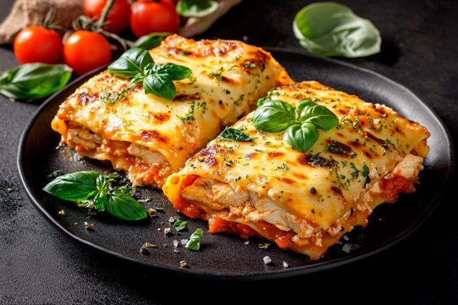

lasanha de frango
ingredientes:
- 500 g de peito de frango cozido e desfiado
- 1 cebola picada
- 2 dentes de alho amassados
- 1 tomate picado
- 1 sachê de molho de tomate
- 1 lata de milho-verde (opcional)
- 1 caixa de creme de leite
- Sal e pimenta-do-reino a gosto
- Cheiro-verde a gosto
modo de preparo:
- Refogue a cebola e o alho em um fio de óleo.
- Acrescente o tomate e o frango desfiado.
- Adicione o molho de tomate, o milho e os temperos.
- Misture bem e deixe cozinhar por aproximadamente 5 minutos.
- Desligue o fogo e misture o creme de leite.
